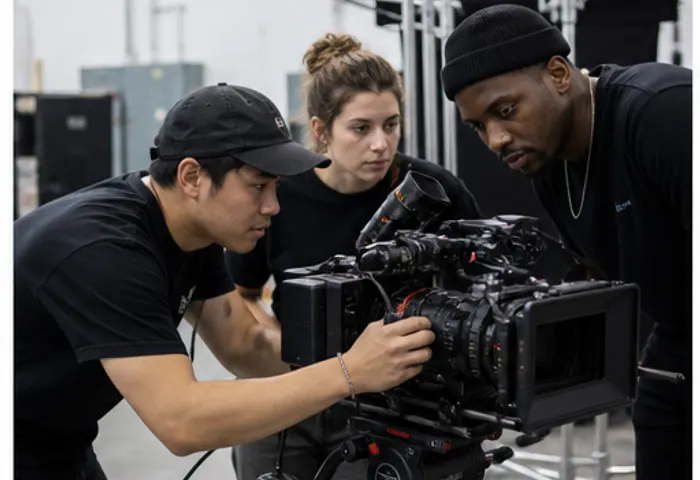
GRe4Nさんの「イマーシブライブシアター2026」が開幕しました！Pickup Works
View MoreWorks
View MoreKujira Journal
View MoreRecruit
View More求人募集
新卒 / キャリア
アーティスト ／ ディレクター ／ テクニカル
映像とイベントの企画から実装まで、手を動かす人を探しています。
経験よりも「つくったことがある」を見ます。ポートフォリオをお送りください。
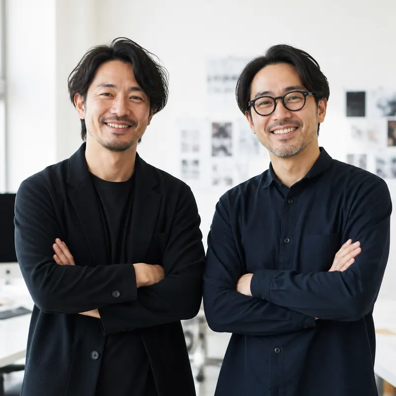
InstagramPodcast
View More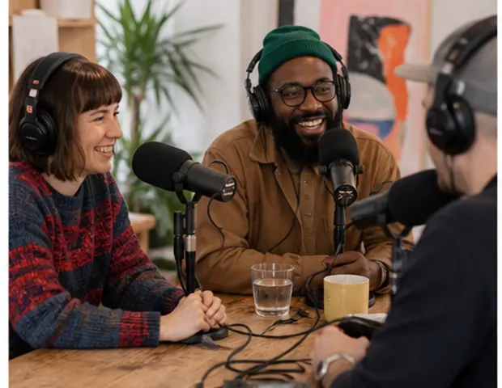
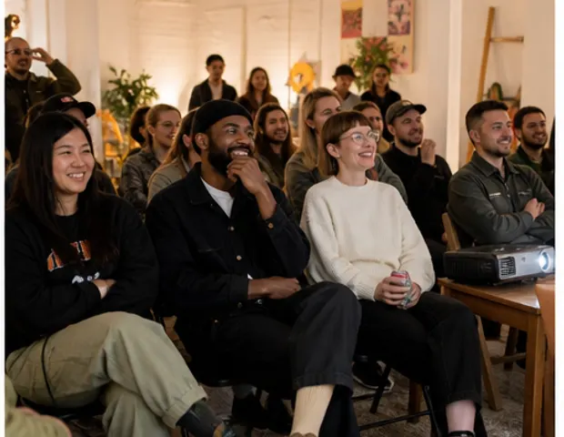
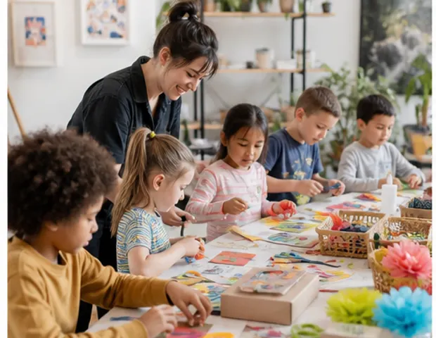
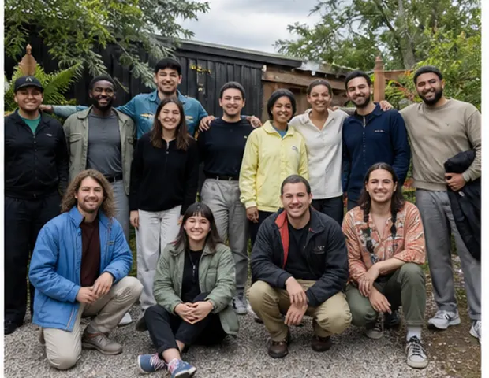
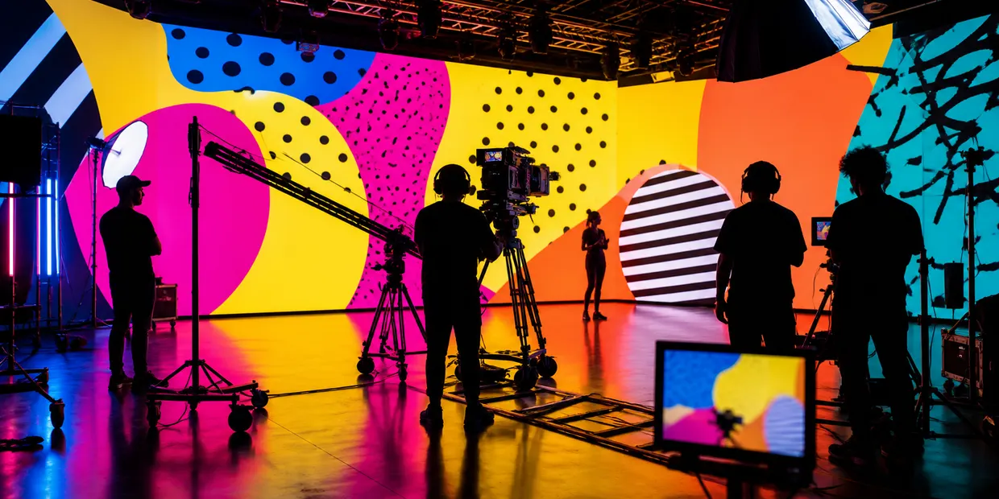
About us
View More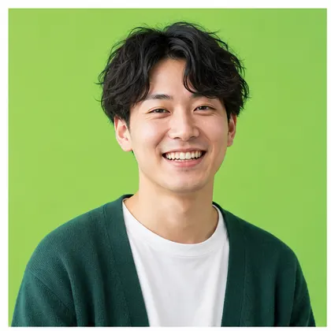
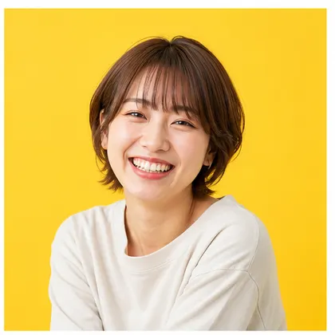
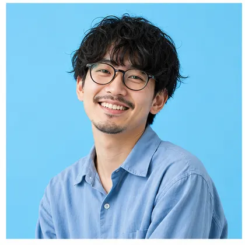
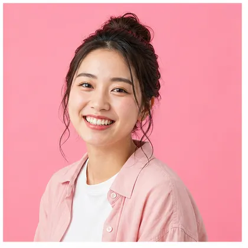
つくるのが好きな人が、
30人います。
クジラピクチャーズは、うみの市の映像・体験デザインスタジオです。CGもセットも実写も、企画から仕上げまで社内でつくります。
「一回やってみよう」で動ける規模を保つのが、いまのところの方針です。
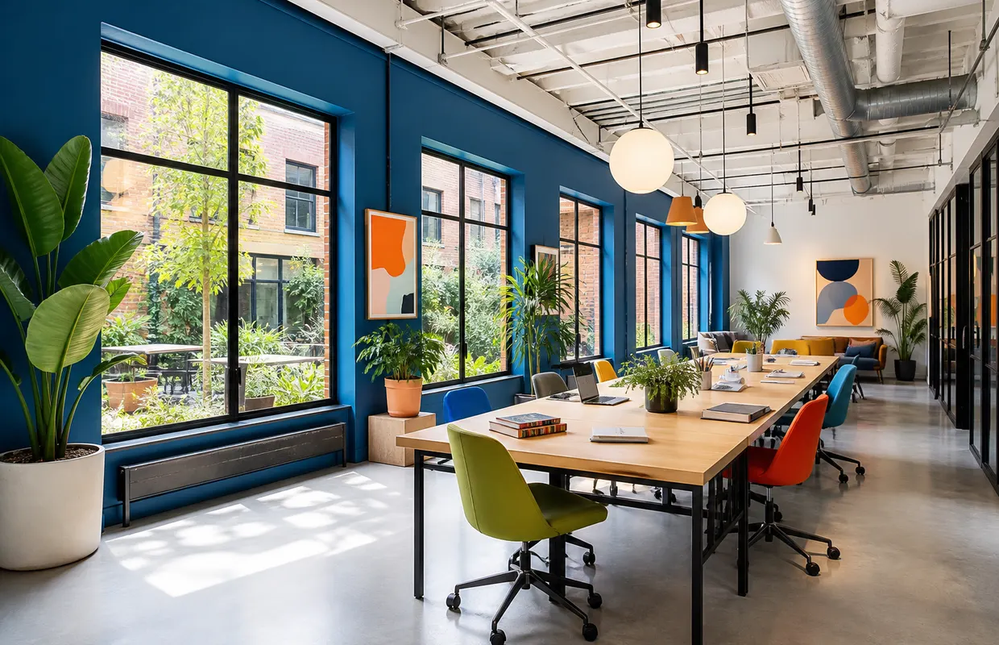
Kujira Made™
View More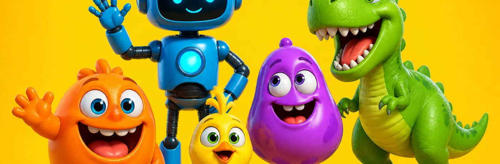
- よふかしラボラトリー
- ぽんとメル
- みなも島のクジラ
- しずかな街